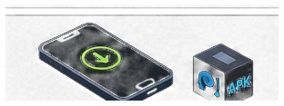
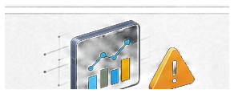
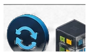
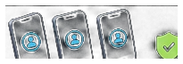

A phone ordered online
Before signing in, review the bootloader, root, SELinux and other system signals. This can reveal signs of firmware changes or unusual configuration.
Root Checker helps identify signs of hidden unauthorized access to your device and checks changes to security settings.
Check your device — and sleep peacefully without worrying that someone might have access to your device.
Currently available to approved closed testers on Google Play. Public release follows testing qualification.
Overall device security level
An animated story about device security. Root Checker provides diagnostic findings; a scan does not itself block data transfers. Release 1 requires a subscription, with no ads or free trial.
Open the film · 43.7 s · 1080pBefore signing in, review the bootloader, root, SELinux and other system signals. This can reveal signs of firmware changes or unusual configuration.
Review root, bootloader, SELinux and system signals before paying. Findings may point to modifications; they do not prove that a phone is completely factory-original.
Review root, bootloader, SELinux and camera/microphone permissions after repair or updates. Compare with earlier scan results when available.
Before signing in, review root, bootloader, SELinux and sensitive permissions for unusual configuration or signs of previous use.

Review new permissions, network activity and device state if an installation is followed by unusual heat, battery drain or behaviour.

Compare app activity, camera/microphone permissions, network signals and system state rather than drawing a conclusion from one symptom.
Before issuing a phone to a new employee, review root, bootloader, SELinux, sensitive permissions and other system signals.
Run a manual system, bootloader and permission check before opening banking apps. Opening another app does not start a scan.

Before issuing the phone again, review root, an unlocked bootloader, unusual permissions, network anomalies and other changes.

Periodic checks help a team review activity and system state on shared work devices.
Before using a crypto wallet or exchange, manually review root, bootloader, SELinux, sensitive permissions and network state.
Review the device before adding work accounts, certificates or confidential company information.
A configuration or signal deserves review, but is not by itself proof of compromise. The check could not be completed, for example because required access or a service was unavailable, the connection failed, or an active VPN caused this online check to be skipped.
Detects whether root access is present, exposed, or likely active so the user can quickly assess whether the device has elevated privileges.
Shows whether the bootloader appears locked or unlocked — a key indicator when checking whether the device may have been modified.
Reviews key Android properties and system signals to help show whether the device configuration looks normal or suspicious.
Reviews available SELinux signals. Direct reads may be restricted; any indirect conclusion is distinguished from a directly read Enforcing value.
Lists apps that hold camera and microphone permissions and helps the user review sensitive access more clearly.
Highlights abrupt signal downgrades and other quick network warning signs that may justify a closer look.
Shows which installed apps used Wi‑Fi or mobile data and helps the user understand traffic consumption by app and by period.
Compares battery temperature against practical thresholds and the device’s normal idle behavior to surface unusual heating.
Checks whether Android developer options appear to be enabled so the user can notice an important device configuration state.
A quick check that replaces guesswork with clearer evidence.
Strange battery drain, an app you don't remember installing, a permission you never noticed you granted.
Google Play Integrity response, app recognition, device-integrity signals and the final server verdict.
See clear results, stated limitations, and practical guidance for items that may need attention.
Root-tool indicators, bootloader, Verified Boot, SELinux, debug/system properties and runtime modification indicators.
Configuration and access signals that can affect privacy, including overlay-related review.
Connectivity state, mobile-network context and optional application-traffic analysis.
Google Play Integrity response, app recognition, device-integrity signals and the final server verdict.
AGDM can compare saved scan states and highlight what changed between the latest and previous scan. Snapshot changes are evidence to review, not automatically a threat.
The completed check did not find the condition it was designed to detect.
A configuration or signal deserves review, but is not by itself proof of compromise.
The check could not be completed, for example because required access or a service was unavailable, the connection failed, or an active VPN caused this online check to be skipped.
A stronger risk indicator was detected. Open the check details or Assistant for guidance.
Reference: what each access is used for and when it is requested
Used for Play Integrity, AGDM backend verification and network checks. Android grants this automatically; no runtime dialog is shown.
Android network/Wi-Fi state access is used to read the active connection, network validation, VPN presence and available Wi-Fi details. Android grants these state permissions automatically; no runtime permission dialog is shown for them.
For Wi-Fi details, AGDM Root Checker asks for Nearby devices on Android 13 or later, or Location on Android 12 or earlier. It reads available connection details, not location coordinates. Android may withhold the network name or security type. Skip to continue with basic network checks.
Requested only when a scan needs cellular network generation/signal context. If denied, that module is marked not checked; AGDM does not use it for SMS, call history or your phone number.
Optional special access for recorded app-traffic totals and Android-reported last-use times of apps matching known indicators. Enable it manually in Android Settings. Without it, traffic is not checked and last-use times are unavailable; other checks continue.
Requested only when the user enables scan-result notifications. It is not requested during app startup.
Used locally to read installed-app metadata, indicator matches and granted permissions. A match or granted permission does not establish how an app behaves.
Used only to restore the automatic scan schedule chosen by the user after a device restart.
Used to purchase and restore the Root Checker monthly or yearly subscription through Google Play.
The app uses the libraries and data sources below. Included licenses and notices are available offline in their original wording; links open the relevant license or provider terms.
Included licenses and noticesIOC data: Echap, Tek, Julien Voisin and contributors. Bundled snapshot: 2026-08-31. Selected Android package and certificate indicators were converted to JSON; network indicators were omitted. License: CC BY 4.0.
A separate Windows application for authorized device checks and analysis of disk images. A local alpha version has been developed; the public release and commercial distribution are separate milestones.
Google Play Integrity response, app recognition, device-integrity signals and the final server verdict.